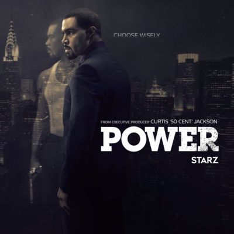
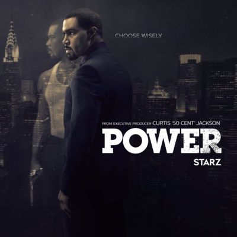
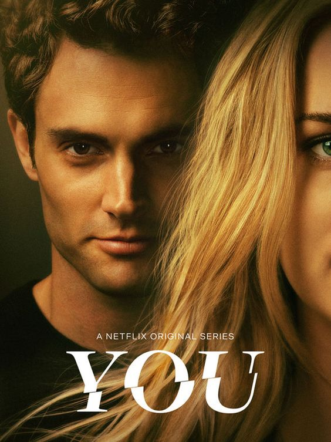
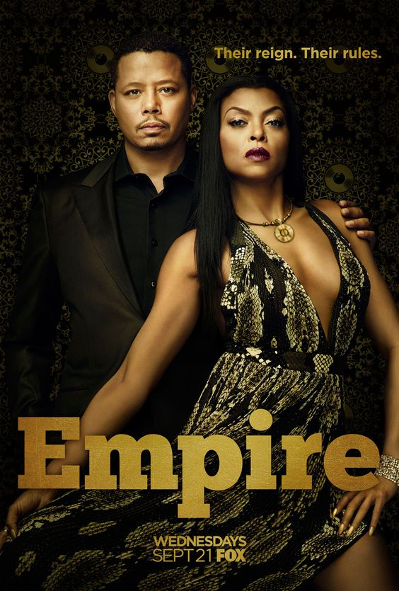
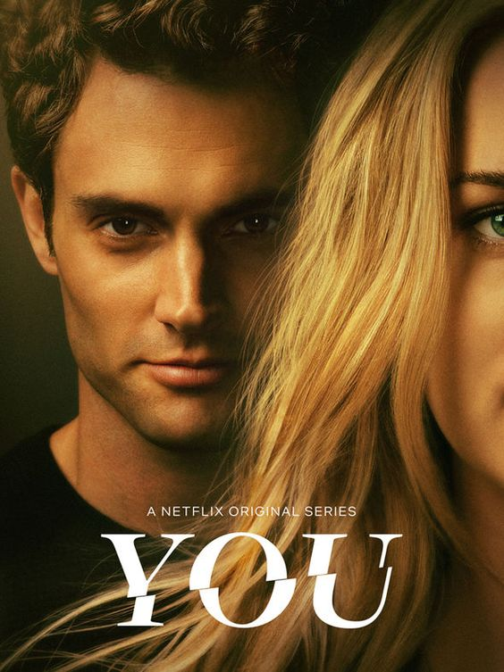
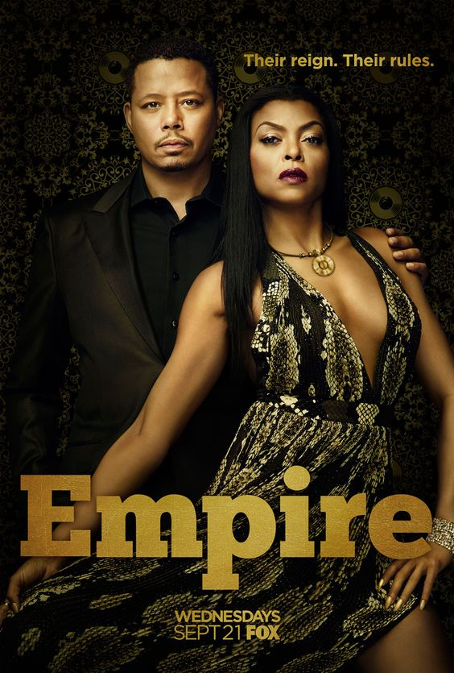

 





On this page I have a list of my favorite tv series’. As previously stated, to me a tv series is anything that has a set storyline, movie-like graphics, and lasts for about an hour. Some of these shows are created by the same producer such as BMF and Power which are both created by Curtis Jackon. He actually is my favorite movie producer and many of his films and tv shows are based on crime and true events. I gravitated toward series more as I got older, and I feel like they have become more popular as I have gotten older as well.
Another reason I enjoy series’ is because they aren’t as restricted as regular sitcoms. Shows like The Boys and Squid Games are filled with unsettling gore and action. For many, this may be a reason to stay away from the shows but for me, it’s what draws me in. I love shows that are Rated-R because I feel like they connect more to real life than others who attempt to keep things child friendly. Overall, these are my top nine television series and I recommend them to anyone who enjoys watching crime, gore, and action films.